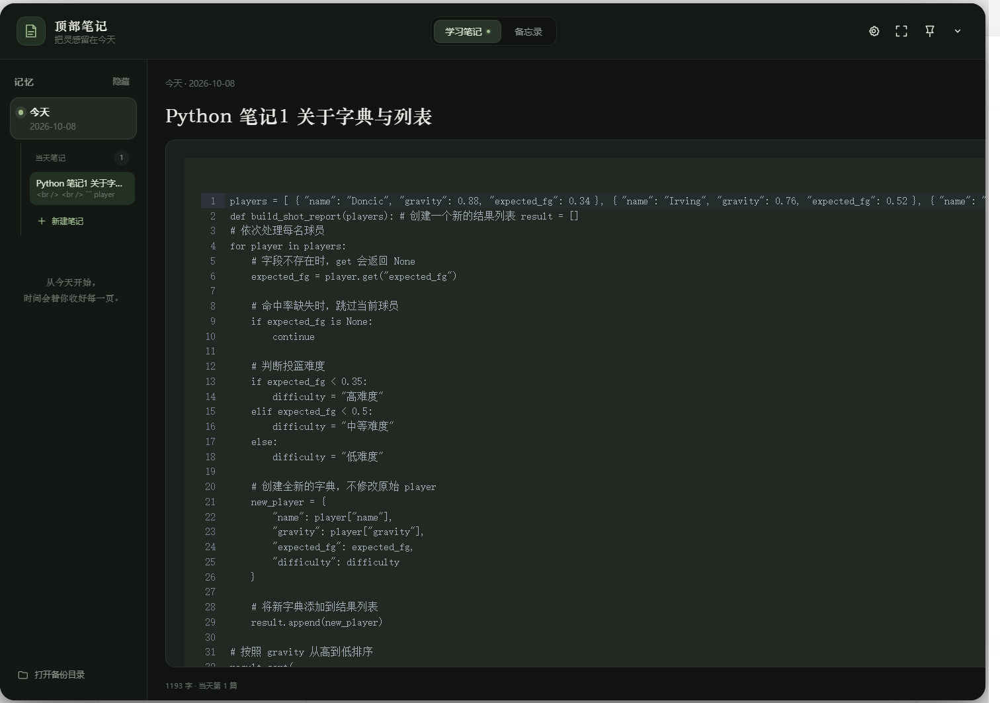
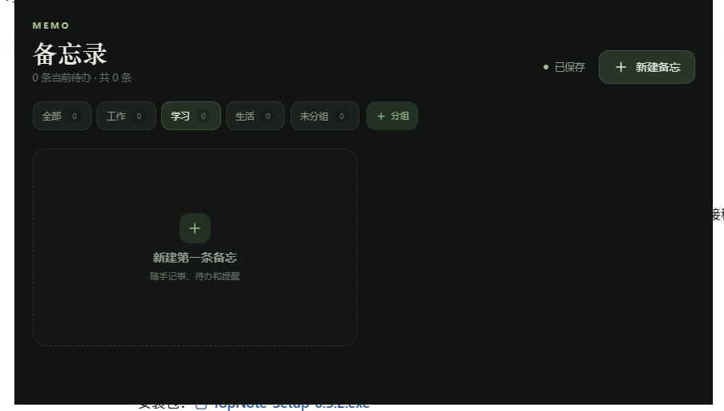
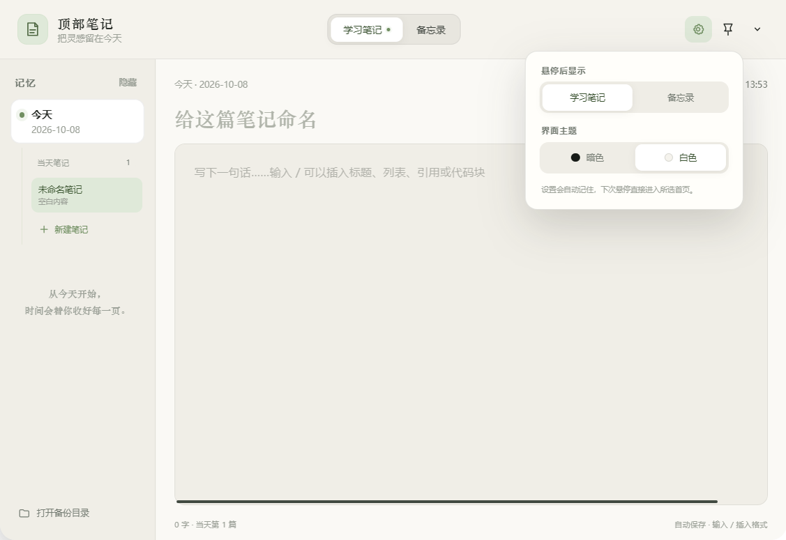

顶部召回
鼠标移到屏幕顶部中央即可展开，窗口自动回到上次的尺寸和位置。
TopNote 是一个从屏幕顶部展开的学习笔记与备忘录工具。记录不打断思路，回顾每天真正学到的东西。

01 · 顶部隐藏 → 学习笔记 · 深色
02 · 切换到备忘录 · 分组管理
03 · 偏好设置 → 浅色主题检查下载按钮、版本号与安装说明。
把新的概念整理成一条笔记。
留一点时间回顾这周的记录。
TopNote 把记录动作缩短到几秒钟，让笔记留在你的工作流里，而不是另一个需要打开的窗口。
鼠标移到屏幕顶部中央即可展开，窗口自动回到上次的尺寸和位置。
标题、列表、代码块和快捷键都在同一个轻量编辑区里完成。
学习笔记按日期保存，每天结束时自动落盘，回顾时不再从零开始。
工作、学习、生活分开管理，随手记下的事项也能很快找到。
窗口圆角、可移动、可全屏。你可以在偏好设置里切换浅色主题，让它适应一天中的不同光线。